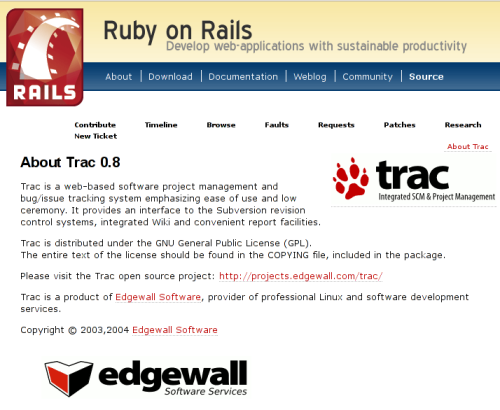

Software Development With Trac
| Author: | Matt Good |
|---|---|
| Date: | 2007-02-25 |
What is Trac?
Trac is an enhanced wiki and issue tracking system for software development projects. Trac uses a minimalistic approach to web-based software project management. Our mission is to help developers write great software while staying out of the way.
Who uses Trac?
- Python web frameworks
- Pylons
- TurboGears
- Django
- Pyjamas
- Twisted
- CherryPy
- web.py
Who uses Trac?
- PHP web frameworks
- CakePHP
- Jelix
- Symfony
- Perl web framework
- Catalyst
- ColdFusion web framework
- ColdBox
Who uses Trac?
Who uses Trac?
Next Python web framework?
Software project management
Common tools for managing software projects
- Bug tracker
- Version control
- Wiki
Problem: Information is scattered across different systems
Trac's Purpose
Provide a consistent/integrated interface to this project information
- built-in Bug tracker
- built-in Wiki
- Version control integration
- includes Subversion support
- others available as plugins
- extensible through plugins
Integration: Timeline
- all events in one place
- RSS feed
Consistency
Wiki syntax used throughout Trac
- Wiki pages
- tickets (bugs/issues)
- version control commit messages
- milestone descriptions
Integration: Linking
Wiki's key feature is linking
- WikiPageNames -> Wiki
- #123 -> ticket
- r123 -> revision
- source:/filename -> source code
- etc.
Linking example

Extending
Different organizations have different needs
Write extensions in Python
- Macros
- Define function for use in the wiki
- Plugins
- Extend current components or add new ones
Existing macros and plugins at http://trac-hacks.org
Macro Example
Save as "plugins/whoami.py"
from trac.wiki.macros import WikiMacroBase
class WhoAmIMacro(WikiMacroBase):
""" Usage: `[[WhoAmI]]` """
def render_macro(self, formatter,
name, content):
user = formatter.req.authname
return 'You are: ' + user
Plugins
- administration
- spam filtering
- account management
- version control backends
- LDAP integration
- continuous integration